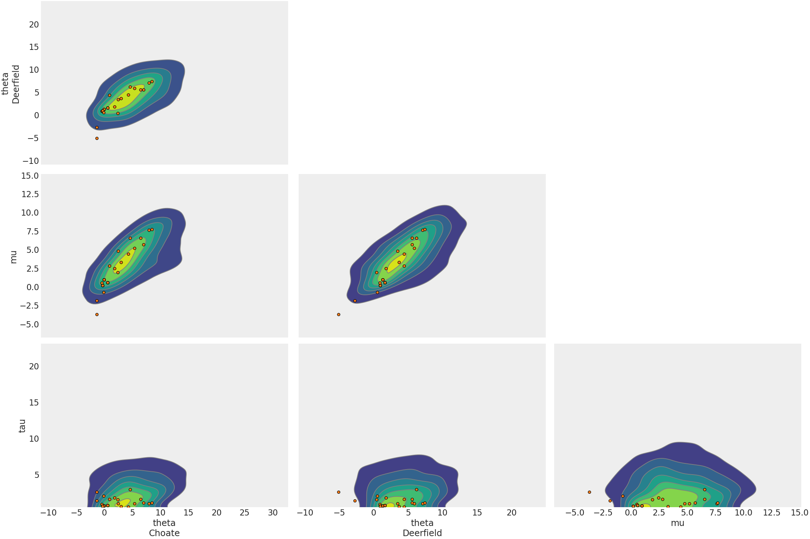

arviz.plot_pair¶
-
arviz.plot_pair(data, group='posterior', var_names: Optional[List[str]] = None, filter_vars: Optional[str] = None, coords=None, marginals=False, figsize=None, textsize=None, kind: Union[str, List[str]] = 'scatter', gridsize='auto', contour: Optional[bool] = None, plot_kwargs=None, fill_last=False, divergences=False, colorbar=False, ax=None, divergences_kwargs=None, scatter_kwargs=None, kde_kwargs=None, hexbin_kwargs=None, backend=None, backend_kwargs=None, marginal_kwargs=None, point_estimate=None, point_estimate_kwargs=None, point_estimate_marker_kwargs=None, reference_values=None, reference_values_kwargs=None, show=None)[source]¶ Plot a scatter, kde and/or hexbin matrix with (optional) marginals on the diagonal.
- Parameters
- data: obj
Any object that can be converted to an az.InferenceData object Refer to documentation of az.convert_to_dataset for details
- group: str, optional
Specifies which InferenceData group should be plotted. Defaults to ‘posterior’.
- var_names: list of variable names, optional
Variables to be plotted, if None all variable are plotted. Prefix the variables by ~ when you want to exclude them from the plot.
- filter_vars: {None, “like”, “regex”}, optional, default=None
If None (default), interpret var_names as the real variables names. If “like”, interpret var_names as substrings of the real variables names. If “regex”, interpret var_names as regular expressions on the real variables names. A la pandas.filter.
- coords: mapping, optional
Coordinates of var_names to be plotted. Passed to Dataset.sel
- marginals: bool, optional
If True pairplot will include marginal distributions for every variable
- figsize: figure size tuple
If None, size is (8 + numvars, 8 + numvars)
- textsize: int
Text size for labels. If None it will be autoscaled based on figsize.
- kindstr or List[str]
Type of plot to display (scatter, kde and/or hexbin)
- gridsize: int or (int, int), optional
Only works for kind=hexbin. The number of hexagons in the x-direction. The corresponding number of hexagons in the y-direction is chosen such that the hexagons are approximately regular. Alternatively, gridsize can be a tuple with two elements specifying the number of hexagons in the x-direction and the y-direction.
- contourbool, optional, deprecated, Defaults to True.
If True plot the 2D KDE using contours, otherwise plot a smooth 2D KDE. Defaults to True. Note: this default is implemented in the body of the code, not in argument processing.
- fill_lastbool
If True fill the last contour of the 2D KDE plot. Defaults to True.
- divergences: Boolean
If True divergences will be plotted in a different color, only if group is either ‘prior’ or ‘posterior’.
- colorbar: bool
If True a colorbar will be included as part of the plot (Defaults to False). Only works when kind=hexbin
- ax: axes, optional
Matplotlib axes or bokeh figures.
- divergences_kwargs: dicts, optional
Additional keywords passed to ax.scatter for divergences
- scatter_kwargs:
Additional keywords passed to ax.plot when using scatter kind
- kde_kwargs: dict, optional
Additional keywords passed to az.plot_kde when using kde kind
- hexbin_kwargs: dict, optional
Additional keywords passed to ax.hexbin when using hexbin kind
- backend: str, optional
Select plotting backend {“matplotlib”,”bokeh”}. Default “matplotlib”.
- backend_kwargs: bool, optional
These are kwargs specific to the backend being used. For additional documentation check the plotting method of the backend.
- marginal_kwargs: dict, optional
Additional keywords passed to az.plot_dist, modifying the marginal distributions plotted in the diagonal.
- point_estimate: str, optional
Select point estimate from ‘mean’, ‘mode’ or ‘median’. The point estimate will be plotted using a scatter marker and vertical/horizontal lines.
- point_estimate_kwargs: dict, optional
Additional keywords passed to ax.vline, ax.hline (matplotlib) or ax.square, Span (bokeh)
- point_estimate_marker_kwargs: dict, optional
Additional keywords passed to ax.scatter in point estimate plot. Not available in bokeh
- reference_values: dict, optional
Reference values for the plotted variables. The Reference values will be plotted using a scatter marker
- reference_values_kwargs: dict, optional
Additional keywords passed to ax.plot or ax.circle in reference values plot
- show: bool, optional
Call backend show function.
- Returns
- axes: matplotlib axes or bokeh figures
Examples
KDE Pair Plot
>>> import arviz as az >>> centered = az.load_arviz_data('centered_eight') >>> coords = {'school': ['Choate', 'Deerfield']} >>> az.plot_pair(centered, >>> var_names=['theta', 'mu', 'tau'], >>> kind='kde', >>> coords=coords, >>> divergences=True, >>> textsize=18)
Hexbin pair plot
>>> az.plot_pair(centered, >>> var_names=['theta', 'mu'], >>> coords=coords, >>> textsize=18, >>> kind='hexbin')

Pair plot showing divergences and select variables with regular expressions
>>> az.plot_pair(centered, ... var_names=['^t', 'mu'], ... filter_vars="regex", ... coords=coords, ... divergences=True, ... textsize=18)